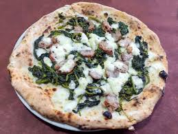
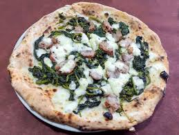

 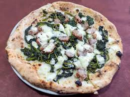
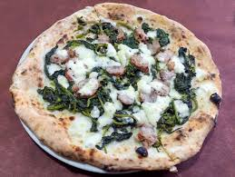
Secondo la tradizione le pizze originali sono 2,la pizza margherita(pomodoro mozzarella e basilico) e la marinara (pomodoro olio e origano), nel corso del tempo sono però stati creati centinaia di altri gusti dai più comuni ai più stravaganti.

La pizza fritta nasce dallo stesso impasto della pizza, ma anziché essere cotto a legna, viene bagnato nell'olio rovente che lo rigonfia,l'impasto viene riempito con ricotta, pepe, fiordilatte e cicoli (pancetta), alcune varianti hanno un ripeino composto da pomodoro e mozzarella


Oltre alla margherita e alla marina esistono altre pizze della tardizione: la cosacca,pomodoro e pecorino, la pizza salsiccia e friarielli, la provola e pepe, la diavola, la capircciosa e la Bufalina
La pizza nel corso degli anni si è evoluta in tanti modi ed ha assunto varie tipologie, troviamo: la pizza al taglio, pizza a metro. pizza romana, pizzetta, la pizza americana.
Per la pizza al taglio o pizza in teglia la pasta lievitata viene stesa, condita e cotta in grandi teglie di metallo tonde o rettangolari e poi messa in mostra per essere venduta a peso a scelta del cliente o, in casa, consumata a tranci. La vendita di questa varietà di pizza è diffusa oltre che nelle pizzerie al taglio vere e proprie, anche nelle panetterie.
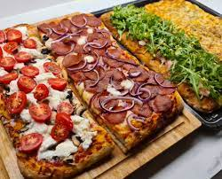 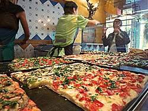Variante della pizza alla pala, di cui ne condivide aspetto e forma, che viene ordinata generalmente da asporto non a peso, bensì a lunghezza. Fu proposta per la prima volta in penisola sorrentina nei primi anni cinquanta del Novecento.
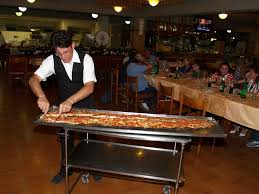 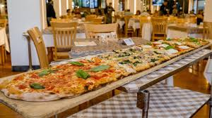La pizza romana è una pizza tonda dalla pasta molto sottile e croccante. L'impasto viene prodotto con farina di grano tenero tipo 00 o 0, acqua, lievito di birra (oppure lievito naturale), olio d'oliva (oppure olio di semi, per ottenere una pizza più croccante) e sale, in proporzioni tali che risulti duro e consistente, tanto da rendere spesso necessaria la stesura con il mattarello
 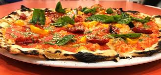
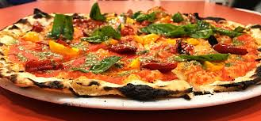
Come suggerisce il nome, la pizzetta è una variante di dimensioni ridotte della normale pizza. Le pizzette vengono preparate utilizzando il classico impasto per la pizza, quella della focaccia o la pasta sfoglia e contengono ingredienti a piacere

La pizza si è inoltre diffusa in tutto il mondo, e in america sono state create tipologie di pizza molto differenti da quella originale, come la new york style o la chicago style.
 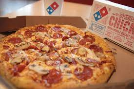
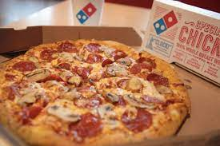